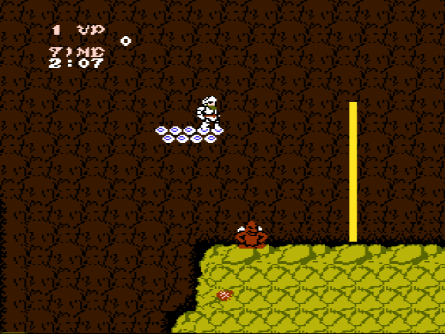

REGION DIFFERENCES & GAME BASICS

I recommend playing the US version since weapons are faster and there’s less enemies spawns. The continue is also on the main screen so you don’t need to use a tedious code. Unfortunately Satan takes more hits to die.
Ghosts ‘n goblins is a platforming game where you control Arthur, who must defeat zombies, ogres, demons.. to rescue Princess Prin-Prin, who has been kidnapped by Astaroth, the king of the Demon World.
If you get hit, you will lose your armor, and if you get hit again, you will die. You can find armor (and other items and weapons) if you find the invisible triggers all over the stages.
There are 6 stages with checkpoints and bosses, and to get the good ending you have to beat the game twice. You can keep playing the game infinitely, but it becomes harder each time. In loop 2, You need to beat level 6 with the shield weapon, or you will get sent back to level 5 after killing satan.
There’s internal rank, which means the game becomes harder the longer you survive, and increases every loop. It affects enemies spawns, speed and amount of projectiles. The enemies are both RNG and fixed.
There’s a timer on the screen, so if the timer runs out, you die, but fortunately, there’s items hidden in the stages that will give you extra time, but there’s also others that will reduce your timer! The timer will restart once you go to another stage.
You can pick a variety of weapons, but most of the weapons are terrible and are meant to troll you. Once you pick up a weapon, the weapon you were holding will disappear. You can recover weapons if you kill enemies that carry pots, or they are laying in specific stages or if you cross an invisible trigger to make them appear.
The enemies are both fixed and rng. Some of them are always in the same place, and others appear randomly.
The bosses are invulnerable to specific weapons. Some of the bosses are a pattern, and some are RNG.
There is score in this game, and hidden 1ups. You only get an extra life when you reach 50000 points. You get score by
killing enemies, or picking up items that are hidden in invisible triggers or from pots that enemies carry. I made a list of all the items you can find in the game, and all the score you get from killing each different enemy. You don't lose score if you die, but you lose all the points if you game over.
There’s continues in this game, but there are a few regional differences and in theory, you can ‘’only continue’’ in the US version. In the japanese version you can continue but only if you introduce a cheat code.
BASIC TIPS
Arthur jump is a fixed arc, which means that once you jump, you can’t switch direction or height, you are locked in the jump until you reach the ground. Before jumping, always make sure you wait and kill the enemies that spawn before starting a jump.
You can turn around while ducking to shoot that way. You can also turn around in the middle of a jump, so you can shoot both directions.
WEAPONS, ENEMY SCORE AND BOSSES

LOCATIONS ALL ITEMS
WALKTHROUGH
STAGE 1
Walking is faster than jumping, so try to jump the least possible and only when it’s necessary. I recommend shooting before jumping, so it might kill some enemies. Always wait when you are about to jump over something, to kill spawns first before jumping
You can turn around and shoot while ducking or jumping.
We’re going to farm the dagger, because it’s easy to use, and fast. You will need to keep killing zombies for a long time, and picking up everything they drop, until they drop the dagger. All bosses are immune to some weapon, we will review it later.
Go top route climbing the ladder after killing the bird. All zombie spawns are random, but the birds and the plants are fixed.
Kill the two plants and the birds, and be careful with more zombie spawns. Drop down the platform, but make sure there’s no zombies down there.
The bird will follow you. Move back to kill it without hitting the arremer.
Arremers dodge your attacks unless they are already doing an action. You can shoot one dagger while being really close to the arremer, and jump towards it while shooting more daggers. This will always hit, the arremer can’t dodge it since it’s already moving. Then wait until the arremer swings down to attack it again, and repeat it
If the kill went wrong, take in account that the arremer swings at your position, so wait in place until it swings, and then jump to the opposite side while shooting.
The torch could be an option to play this game if you will. To kill the arremer is very similar to the dagger. Shoot the arremer very close and jump towards it while shooting another one. Then wait until it swings down and shoot two more, but don’t spam the attack because if the torch falls to the ground, you won’t be able to shoot anymore until the fire on the ground stops
There’s armor recover after the platform. It will appear if you jump to the red box. You don’t get the checkpoint until you cross the yellow line.
Duck right away when you see the enemies. Their arc increases more over time when they are on the screen, so you won’t get hit. If they are too low, you can walk to reposition in between them and duck.

If you duck on that platform, enemies will most likely hit you, and a yashichi will appear. Don’t pick it, it only gives you 100 score points and steals 30 seconds of your playtime.

There’s another hidden yashichi that spawns if you jump to the red square. It gives you 10.000 points if you pick it up.
For the burrito area, go as fast as you can, don’t stop to kill them. Try to leave them behind and jump and shoot when they move towards you and they are in range of shooting. Be really careful with the ones that spawn in front of you or on you.
The unicorn moves are random. The unicorn is invulnerable to shield. I recommend fighting it while
crouching the whole time, in case it shoots a fireball, and if it gets close towards you, jump away while shooting.
If the unicorn gets offscreen, it will charge at you. Just spam the attack button to deal the most damage possible, because there’s no way to dodge it.
Time to pick up the key! The key gives you 1000 score points
STAGE 2
There’s a 1UP at the beginning. To make it appear you need to go to the platform where the 1UP is, and jump out to the red square.
Kill the blue imp that comes out from the windows, and be
careful with the other one. Climb up to the top platform as fast as you can.
Keep going on the upper platform, and jump to the next one. Dodge the projectiles from the plant, and fall down.
The yashichi will appear in front of you if you walk through the red square. It gives you 5000 score points if you pick it up.
Jump out of the platform to reach the lower one and hurry up to land at the checkpoint before the platform falls.
There’s always a bird before the yellow house. Walk past all the windows without stopping and you won’t get hit most of the time. If you get hit here, just take a death.. We need the dagger for the next section so if
you are not holding it, you can farm one by killing the ghosts with a pot that comes out of the windows of the house.
The next section is the pigs hotel. There’s no more checkpoints in this stage, and it’s a very long one, because after the hotel there’s a platform section. There’s two ways to make it past the hotel: the normal way, and the hotel skip.
The pigs will throw balls at you if you are in front of them, and down if you are under them. If you shoot them, they won’t throw balls at you, that’s why the dagger is good in here, because it shoots very fast. You can kite the enemies by shooting and jumping away. You can jump over them and kite, so you don’t have to kill them to make it to the closest ladder.
There isn’t a strategy to move the pigs away from ladders when you are trying to climb. You just need to wait and get lucky that they will move away.
Hotel skip
The strategy here is we want to make it to the top of the building with armor, because we are going to get hit by a bird so we can fall out of the wall.
Make it to the top, waiting until the pigs move away from the ladder and shooting them as fast as we can to prevent them from throwing a ball. You can also kite them until you make it to the closest ladder.

There’s armor at the top left of the hotel. To make it appear you need to jump to the red box. We need armor to make the boost.
Once you are at the top, recover the armor if you don’t have it on, and walk to the other side until you reach the wall. Once you hit the wall, you can duck and turn around to keep in the correct position without moving.
You need to jump to spawn a bird that’s high enough for the skip to work. You need to be facing left, because you get pushed the opposite way you are facing. Once there’s a bird coming close to you, calculate and jump whenever the bird is very close to you and also very high, and get hit by it. You will end up on top of the wall, and
you can fall out of the hotel then
Normal route
We are going to clear the right path before climbing to the top. Start climbing up on the first ladder you find, and shoot the pig very fast. Then move to the right side, you will find a wall. Behind that wall is the path to the exit, so we want to clear it from enemies. Kill the pig there, but be careful, they can shoot through walls.
Birds spawn randomly all the time! If you hit it instead of the pig, the pig can shoot at you!
Climb the closest ladder and kill the pig that’s on the left first. Then move to the right and shoot the pig behind the wall.
You made it to the last platform! Kill the pig on the right and then proceed to exit.
There’s a torch that spawns on the ladder. Once it appears, it will never disappear unless you die, so never climb down that ladder with the red square, or jump there, or you will have to repeat the entire stage.
Wait for the red bird to come to kill it. Stand on the right side of the platform and jump out when you reach the top. Shoot the ghost coming from the window.

At this point you might be running out of time. There’s a yashichi that appears if you stand on the right side of the platform when you cross the red square. It gives you 60 more seconds and 100 points.
Stand on the right side of the platform so you spawn the yashichi. When you reach the top, jump to the right. Shoot the ghost that comes from the window.
Do the same in the next row of platforms.
There will be two unicorns at the end of the stage. Kill them one by one, jumping away when they get close and always ducking to dodge projectiles. The first one will always jump over you to the left after three hits so prepare to jump away. If you jump way too far to the right, you will wake up the second unicorn, so try to not get so close to the right side.
STAGE 3
You can duck under the bats so they can’t reach you but you can kill them. If you have another weapon than the dagger, farm the dagger here, because in the next checkpoint there won’t be any weapon
drops until the end.
Take the top route. The zombies won’t spawn if you jump. The spikes are only part of the background, they are harmless.
The mudman is only vulnerable when it’s red, and it will shoot where the face appears. It can shoot up and down at the same time and unfortunately you can’t dodge that one. You can kill it faster if you shoot at point blank
Then fall to the ground when there’s no zombies down there, and kill the mudman.

If you jumped out of the pit instead, you spawned a lance right behind the mudman. Don’t pick it because there will be no other weapon drops in the next part and we need the dagger.
This is a great spot to farm weapons, and points if you want to go for high score or get some extra 1UP. You get the checkpoint when you cross to the blue scenario.
This place is full of arremers. We will take a route to avoid as many as we can.
Wait for the bat and kill it. Wake up the arremer when you are very close to it, and land as many daggers as you can. Wait for it to swing to you, to jump and keep shooting. Do the same if it is on the other side.
Leave the burrito behind and kill the mudman.
You can skip the next arremer since we are going to recover armor afterwards. Wake the
arremer up, and get hit by it while you face left to get pushed to the right.
Then keep climbing to the top where the ladder is, without stopping, ignoring all the enemies and climb the ladder.
You can make the armor appear if you jump out of the platform towards the red box. Watch out, there’s two ghosts that spawn before the armor. Do a neutral jump in the platform before the armor, and jump back while shooting to kill the ghosts. Get the armor and keep climbing.
You can skip the next arremer too. Wake it up and get hit by it while you face left to get pushed to the right. Then keep walking down.
There’s a yashichi that appears if you jump to the red square from the top platform, but this one doesn’t appear if you skipped the arremer. It gives you 5000 score points.
After that, go down to the last step and jump from there. Don’t jump from the very left of the step or you could land on the arremer that’s under. ignore that arremer. Duck at that left corner of the step you landed on to make the armor appear. It will fall on the bottom floor. Drop down to pick it up.
Don’t pick up the doll, it will turn you into a frog. Wake up the arremer with one dagger, and shoot a few more. Wait until it swings down to kill it. Don’t pick up the torch.
The dragon is invulnerable to the lance. The head is the vulnerable point, but you can destroy the body parts to make it smaller. Sometimes it randomly shoots projectiles.
Before arriving at the boss, sometimes there is an invisible bullet that will hit you. This is a bug of the game, and it doesn’t always happen.

To dodge it, take the 4th rock as a visual cue to jump once you reach it.
The dragon pattern is always the same but depends on your position. Jump before the boss to avoid the invisible projectile, and if it’s sleeping, start throwing daggers and once it wakes up, keep shooting while jumping to the left.
Jump before the boss to avoid the invisible projectile. If the dragon is awake, wait where the light blue wall starts, until it comes down from the right. Shoot a lot of daggers while jumping to the left, and do the same to the right when it comes back.
STAGE 4
Jump on the second platform to get to the yellow ground.
Get on the highest platform that moves to the right. A platform will cross through that one. Get on it and land on the next yellow ground.

A 1UP will fall down there once you cross the red square. You can go and pick it up.
Take the platform that’s under the yellow ground, and stand on the right edge. Once you are above the arremer, jump to its right, and run to the checkpoint:
The checkpoint is a little bit far so make sure you cross it immediately after landing on the ground. You can take a death to despawn the arremer if you didn’t kill it yet.
There is a shield that spawns in front of you if you duck at that point in front of the bridge. We need it, so pick it up.
The shield kills projectiles so it will be very useful in the next levels.
This part is always the same. Walk past all the enemies, leaving them behind. Once you see the first fire pillar, jump over it and jump over the next one and shoot, so you kill the blue imp that comes from the lava on the right side.
Then there’s two things that can happen:
1- The fire pillars will always be the same. Jump in between them, you will land in the money bag. Then wait for the blue imp that’s on the right side to show up to kill it and keep going.
2- if you see a blue imp coming from the right side under the bridge, you have to stop before the fire pillar until it comes up and you can kill it and then you can jump over the flames right away.
Jump over the king doll because it turns you into a frog if you pick it up.
There’s a last blue imp that will come out of the lava before the arremer. Kill it and turn around to kill other imps if necessary.

Before the arremer, you can spawn a king doll if you jump to the red box. It will give you 10.000 score points.
You can kill the arremer projectiles with the shield. Wake up the arremer shooting once while on the floor and jump towards it, keeping on shooting. Then wait until the arremer comes down to finish
If you don’t kill it fast, just wait on the spot, until the arremer swings down to jump shoot.
The dragon is exactly the same as in the previous screen. It’s always the same pattern, determined by your position. Mimic the image to succeed.
STAGE 5
There’s no checkpoint in this stage. There will be a lot of random burritos and imp spawns all over the stage. There’s two ways to beat the stage: The normal route, and a skip where you clip through a wall and all the rest of the enemies disappear.
Normal route
Don’t get close to the skeleton or they will jump on you. Shoot them from the distance.
Climb the ladder, being careful with random spawns. Go to the left to kill the skeleton and to bait the bats on the ceiling to kill them.
Then carefully go back to the ladder and climb up.
Jump over to the other side and climb up the next ladder.
There will be an axe on the way. Jump over it. There’s an arremer, you can go around it to pick up a 1UP and come back.
Wait for the pig to get away from the ladder. As we said, there’s not a strategy or a good tip to make them go away, you just have to be lucky. Shoot a lot, the shield destroys the balls that the pig throws.
You can be lucky and be able to climb to the top right away if the pig of the second floor is on the right side. It doesn’t matter if you get hit up there, there’s armor recover afterwards.
Cross to the other side, picking up the armor if you lost it. Then move towards the ladder.
Even if it looks like there aren’t any pigs up the platform, it can happen that a pig randomly appears from nowhere. Always remember this and be careful while climbing that ladder.
Make it to the other side, killing the pig before jumping to the next platform. Careful with possible burrito spawns.
Then climb to the top. Once you are almost on the last platform, you want to cross to the left, to go up in that middle ladder (this is to set up the fight against satan that we will explain later)
Clip (enemies despawn)
If you do a small clip at the beginning of the level, every
monster will despawn for the rest of the level. The downside is that you will not have armor for the rest of the level, because the armor drop won’t work.
Climb the first ladder you see, and stand in the middle of that block where the yellow wall starts. Duck and turn around to maintain the position you are at. We want to be facing right because as we saw before, you get pushed to the opposite side you are facing when you get hit. Jump onto something. It will boost you up. Keep pressing jump until you are over the next platform and keep walking to land in it.
Then you just have to climb to the top, every monster will be gone. Remember that you can’t get the armor back if you used the clip.
As I said before, the last ladder you have to climb is the second one from the left, so you need to jump to that platform and climb it, to set up the fight against Satan properly.
The shield can kill satan’s projectiles. You can always duck under satan. Stand relatively close to it to bait the projectile towards you so you can shoot it. Once it swings towards you, start jumping to the other side while hitting it as many times as possible, and ducking when it gets very close to you. Then repeat the same process to the other side.
If you are too slow, you can always stand still and wait for Satan to swing down, while ducking once it swings very close to you, and killing its projectiles.
STAGE 6
If you don’t beat this stage with the shield, you will get sent back to level 5, because the shield is necessary to kill Astaroth. The problem is that there’s a unicorn in this stage, which is invulnerable to the shield, but we are going to skip it, doing a damage boost.
Kill the skeletons from far away and climb the ladder. Don’t pick up the lance because the dragon is invulnerable to it.
The unicorn is invulnerable to shield as we said, so we are going to skip it, since there’s armor recovery later. Get close to the unicorn and turn around, you will get hit at some point and you will get pushed towards the left since we are facing right. Then climb the ladder while being on i-frames.
The dragon pattern is always the same.
If you pick up another weapon by accident, you can recover the shield here. It will spawn once you cross the red box.
You can spawn the armor if you
jump to the red box. Pick it up. Once you pick it up, you can either play the stage as usual, or you can do a clip to skip part of the stage.
Skip
Get close to the arremer and shoot at it so it moves up. Keep walking until the end of the wall, and jump to the arremer and get hit by it while facing right. Once inside the wall, keep jumping until you reach the third floor. Then walk out and keep walking without stopping. Then keep climbing quickly. It's a hard trick.
Otherwise you can keep playing the game as intended:
There will be a torch in the way, but don’t pick it up because you need the shield to kill satan, or you will get sent back to stage 5
Wait to leave the pig on the left side and kill the skeleton. Then shoot the pig when you are out of range of the arremer in case we hit it accidentally.
Sometimes you can be very unlucky and the skeleton of the other level can wake up and it will make it very hard to keep climbing.
This is the only arremer we can’t skip. Climb to the top of the ladder to wake it up, and then try to kill it when it swings at you like we killed it in the other levels.
Sometimes you can be pretty lucky and the arremer will despawn by going to the left.
Since there’s an arremer on the left, climbing up the ladder while the pig is on the right is good to prevent waking the arremer up by accident while hitting the pig. There will be random burrito spawns all over the stage so be careful before climbing ladders.
There will be an axe in the way. Jump over it because as we said, if you don’t have the shield, you will get sent back to level 5 after beating this stage. If you pick it up by accident, you can kill yourself and restart the stage, since you can find one where the dragon rest, as I showed before.
Climb the middle ladder to set up the fight properly.
We will face two satans this time, wake up one at a time, leaving the other offscreen so it won’t wake up yet. You can always duck under satan. Standing close baits its projectile towards you, but you can also kill the projectile with the shield. When it swings towards you, jump to the other side while hitting it as many times as possible, and ducking once it gets very close to you. Once you kill the first one, you can walk towards the second one to wake it up and fight it the exact same way.
There’s a quick kill of both satans at the same time. You have to wake them up fast enough and kill the projectile, and once they move to the left, you can walk right to the end of the wall and shoot towards them in that position. They won’t reach you and they will be both dead in no time.
Astaroth fight is pretty simple, Just stand a little bit far from it and shoot. If it moves towards you, just jump away. You have to shoot Astaroth to its beard, if it’s too high up it won’t hit
LOOP 2 DIFFERENCES
After killing Astaroth, you will get sent back to stage 1, and you will have to beat the entire game once again to get the good ending. There are infinite loops, so you can keep going and beat as many as you can if you want to.
The arremers will be faster, more aggresive, and they will be able to shoot two bullets.
PRIN PRIN KISS GIVES YOU POINTS
YOU NEED TO SWITCH WEAPON BECAUSE THE UNICORN IS INVULNERABLE TO SHIELD
Since there’s an arremer on the left, climbing up the ladder while the pig is on the right is good to prevent waking the arremer up by accident while hitting the pig. There will be random burrito spawns all over the
Since there’s an arremer on the left, climbing up the ladder while the pig is on the right is good to prevent waking the arremer up by accident while hitting the pig. There will be random burrito spawns all over the stage so be careful before climbing ladders.
Since there’s an arremer on the left, climbing up the ladder while the pig is on the right is good to prevent waking the arremer up by accident while hitting the pig. There will be random burrito spawns all over the

Stage select: At the title screen, hold 🡺 and press B B B, release the right button and enter 🡹 B B B 🡸 B B B 🡻 B B B and press START. (Note that you only have to hold right, not the other directions).
Stage select: At the title screen, hold 🡺 and press B B B, release the right button and enter 🡹 B B B 🡸 B B B 🡻 B B B and press START. (Note that you only have to hold right, not the other directions).
atage select: At the title screen, hold 🡺 and press B B B, release the right button and enter 🡹 B B B 🡸 B B B 🡻 B B B and press START. (Note that you only have to hold right, not the other directions).
tage select: At the title screen, hold 🡺 and press B B B, release the right button and enter 🡹 B B B 🡸 B B B 🡻 B B B and press START. (Note that you only have to hold right, not the other directions).
tage select: At the title screen, hold 🡺 and press B B B, release the right button and enter 🡹 B B B 🡸 B B B 🡻 B B B and press START. (Note that you only have to hold right, not the other directions).
Ignore all the arremers that are on the sides. There is a torch spawn in there but don’t pick it, remember that we need the shield to get to the last boss, otherwise if we finish this level with another weapon, you will get sent to stage 5.
Ignore all the arremers that are on the sides. There is a torch spawn in there but don’t pick it, remember that we need the shield to get to the last boss, otherwise if we finish this level with another weapon, you will get sent to stage 5.
l the arremers that are on the sides. There is a torch spawn in there but don’t pick it, remember that we need the shield to get to the last boss, otherwise if we finish this level with another wea
l the arremers that are on the sides. There is a torch spawn in there but don’t pick it, remember that we need the shield to get to the last boss, otherwise if we finish this level with another wea
l the arremers that are on the sides. There is a torch spawn in there but don’t pick it, remember that we need the shield to get to the last boss, otherwise if we finish this level with another wea